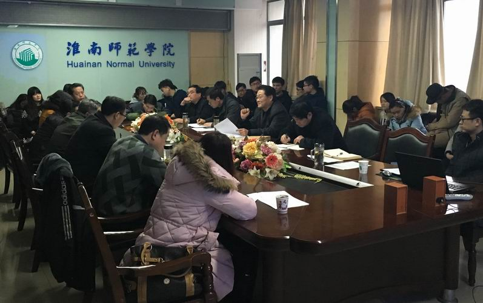

接过扶贫支教接力棒
——淮南师范学院第二批师范生走进炎刘

2月25日，淮南师范学院第二批扶贫支教师范生从母校出发，走进寿县炎刘学区的8所学校，接过扶贫支教的接力棒。
为发挥教育扶贫的长效影响，扭转贫困地区的教育面貌，在首批扶贫支教受到社会认可的基础上，学校提前筹划、精心组织第二批支教队伍，以保证扶贫支教工作顺利交接。经过前一阶段的报名、选拔和培训，33名师范生带着对农村教育的深厚感情加入到扶贫支教的队伍中来。
23日，学校召开第二批炎刘扶贫支教动员会。会议通过纪录片《心系贫苦地区教育，服务国家扶贫战略》回顾了淮南师范学院打造教育扶贫“炎刘模式”的全过程。首批扶贫支教师范生代表在会上介绍了各自学校的具体情况和扶贫支教的收获、感悟。第二批扶贫支教师范生逐一表态，用简短而真诚的语言表明坚定的教育理想。教务处、学生处、团委、教育学院、体育学院、美术与设计学院、音乐与舞蹈学院的主要领导先后发言，表达对学生们的殷切希望，同时一致表示全力支持学校的扶贫支教工作，做学生的坚强后盾。最后，马建国副院长对扶贫支教师范生提出“两点要求”和“两点希望”：要求师范生在支教期间认真做好工作日志，在记录和反思中获得更好的成长；要求师范生本着“安全第一、健康第一”的原则开展支教工作；希望师范生能够顺利接过扶贫支教的接力棒；希望师范生能够传承、丰富、创新“炎刘模式”。
25日上午，寿县炎刘学区举行了隆重的欢迎仪式。寿县教育局局长夏承开向支教大学生的到来表示感谢和热烈欢迎。体育学院应力院长和郑海涛同学分别代表我校教师和大学生发言，表达了对于扶贫支教工作的坚定信念。马建国在发言中勉励学生要记住四句话、做好五件事，踏踏实实工作，努力成为“学校和农村的灵魂”，让“农村学校做改造农村社会的中心”。